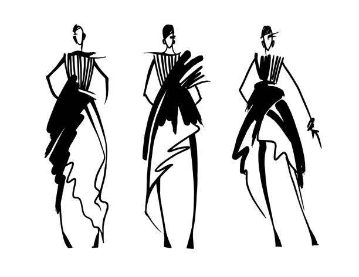
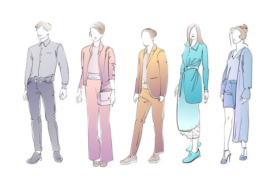
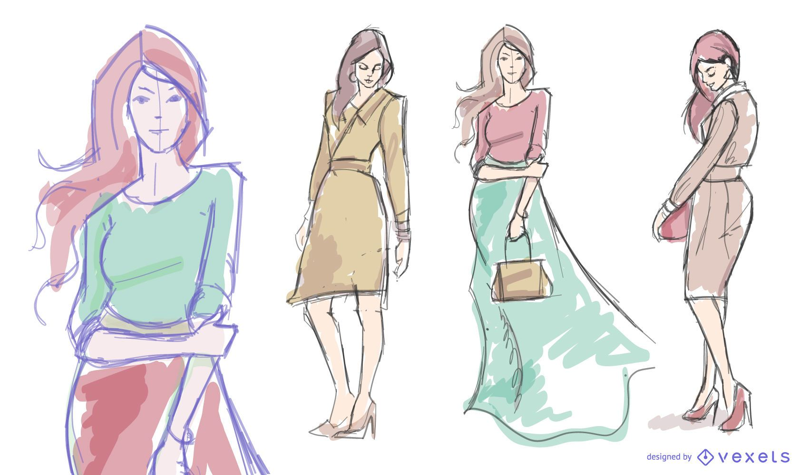

Не просто тренд
то такое устойчивая мода, и как она меняет фэшн-индустрию прямо сейчас Словосочетание sustainable fashion, или дословно «устойчивая мода», давно вышло за пределы профессионального словаря фэшн-индустрии и вошло в повседневный обиход. В 2019 году вопрос ответственного потребления не просто модный тренд, а необходимая мера. Угроза глобального потепления и загрязнения окружающей среды сегодня волнует не только экоактивистов. Как большие корпорации, так и нишевые фэшн-бренды ведут борьбу с избыточным потреблением вещей с целью пересмотреть подход к производству. Как принципы устойчивой моды во всем мире меняют покупательские привычки и что происходит на локальном уровне — рассказывает «Коммерсантъ Стиль»
Люкс и масс-маркет в борьбе за осознанное потребление
Модные дома стремятся поддерживать тренд на ответственное потребление, еще и инвестируя в экостартапы. Например, Chanel вложила средства в стартап Evolved by Nature, который занимается исследованиями способов замены химикатов натуральными компонентами. Но масс-маркет тоже не отстает: fast-fashion бренды стараются исправить ущерб, который нанесли экологии. Флагманом одежды из переработанных материалов выступает шведский бренд H&M, выпуская капсульные коллекции, созданные из переработанных материалов. Компания Inditex, владеющая брендами Zara, Zara Home, Oysho, Uterque, Pull & Bear, Bershka и Stradivarius, запустила инициативу Join Life. Проект включает в себя: оптимизацию процессов логистики, открытие экологически эффективных магазинов, использование упаковки из переработанных материалов, программу сбора использованной одежды. Известный испанский масс-маркет бренд Mango уже не первый год выпускает линию Committed из переработанных материалов. Mango работает над программой Take Action, объединяющей инициативы по развитию бизнес-модели, соответствующей принципам бережного отношения к окружающей среде и ответственного производства. Бренд также начал работу с фондом Better Cotton Initiative с целью дальнейшего увеличения использования органического хлопка и продвижения ответственного производства волокон по всему миру. А как насчет нишевых марок? Нишевые зарубежные модные бренды своей инициативностью подстегивают более крупных коллег в движении к устойчивому производству. Например, английский бренд женской одежды Kestan продвигает идеи осознанности: поддерживают местных производителей и ручной труд, а также используют свои стоки для создания новых коллекций. Бренд сотрудничает со всемирной организацией Global Organic Textile Standards, которая следит за стандартами производства органических материалов: от экологичности до условий труда занятых в производстве людей. Варшавская студия дизайна Thisispaper, выпускающая минималистичные рюкзаки пастельных оттенков, тоже поддерживает местных производителей и использует только органически выращенный хлопок и лен, а марка из Нью-Йорка SiiZU обеспокоена минимизацией углеродного следа от своего производства, поэтому базирует свои фабрики, пошивочные цеха и поставщиков рядом друг с другом, чтобы избежать ненужных перелетов,— в Монголии, Китае, Японии.
Красота требует жертв?
Ежегодно в мире производится примерно 150 млрд единиц одежды, и это делает модную индустрию одной из самых опасных для экологии. Только в 2015 году этот сектор легкой промышленности загрязнил атмосферу 1,2 млрд тонн парниковых газов — это намного больше, чем за тот же период произвели все самолеты и корабли в мире. Больше всего для экологии опасна концепция fast fashion, продвигаемая крупными масс-маркет компаниями, производителями одежды низкого качества по доступной цене. Они стимулируют своего покупателя приобретать каждый сезон новые вещи, чтобы клиент избавился от них через несколько месяцев и пришел за новыми. В большинстве своем такая одежда сделана из материалов, окрашенных химическими красителями, она не выдерживает большого количества стирок, быстро теряет форму и чаще всего оказывается в мусорном ведре в течение полугода. Казалось бы, все очевидно: нужно отказаться от искусственно созданных материалов и делать выбор в пользу натуральных, но не все так просто.
Устойчивая мода в России и на Украине
Отечественные локальные бренды тоже подают хороший пример, интересен кейс российского бренда NNedre, выпускающего базовые модели из натуральных тканей. Основательница марки Нелли Недре планирует делать распродажи тканей, которые остаются после производства новых коллекций, а также запустить проект с художниками и дизайнерами интерьеров, которые превратят переработанные материалы в арт-объекты. Марка из Санкт-Петербурга, выпускающая мономодель стеганой куртки в разных оттенках Vatnique, тоже придерживается принципов устойчивой моды, используя в работе винтажные и оставшиеся от крупных производств материалы, а украинский бренд базовых вещей и денима Ksenia Schnaider, завоевавший любовь Тины Кароль, Беллы Хадид и Дуа Липа, не первый год экспериментирует с переработанными материалами, делая акцент на экологичности. Деним, использующийся в каждой коллекции бренда, получают из текстильных отходов, ему же вторит RCR Khomenko, проект дизайнера Яси Хоменко, которая одной из первых стала следовать тренду на upcycling на Украине. Яся переделывает рубашки, наносит принты-иллюстрации на ткани, которые находит на винтажных маркетах и в секонд-хендах.